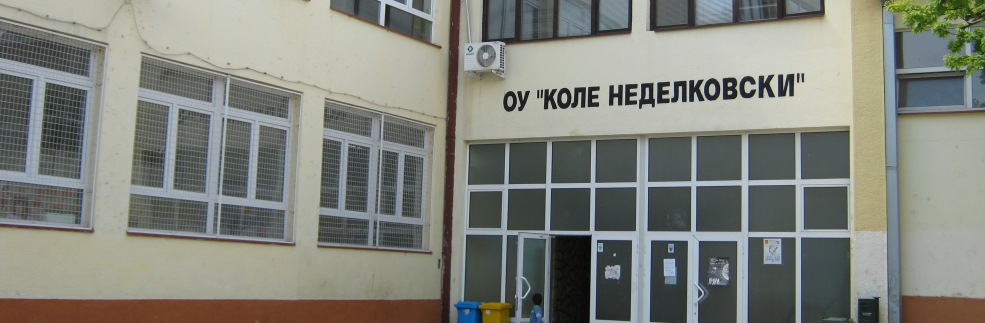
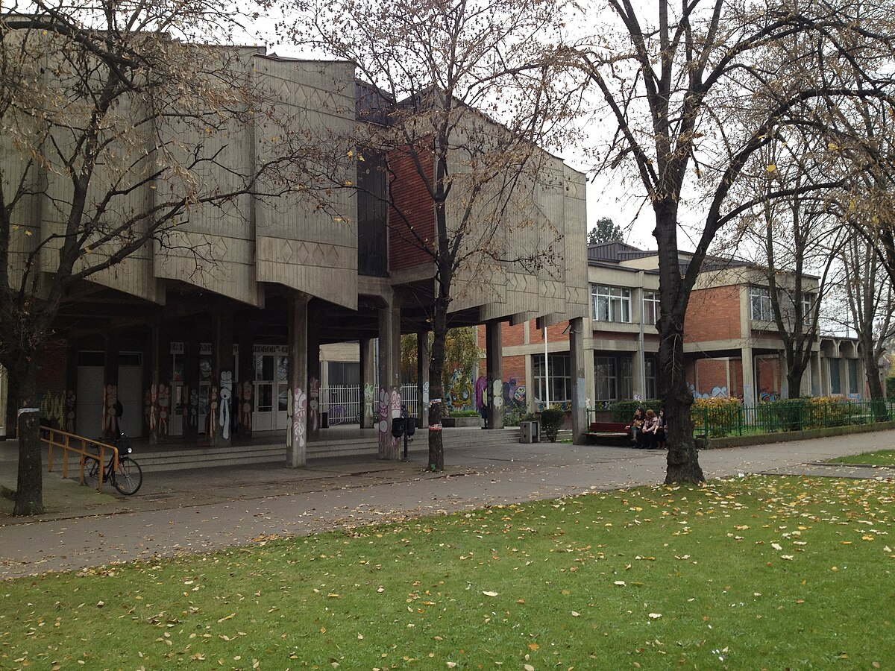

Биографија
Јас сум Виктор Никифоровски. Живеам во Скопје, Република Македонија и имам 20 години. Програмерскиот свет ми стана страст уште од мал, и со текот на времето таа страст се развиваше во посветеност кон учење и усовршување на моите вештини. Моментално студирам на Факултетот за информатички науки и компјутерско инжинерство, каде што се фокусирам на различни програмски јазици и технологии. Уживам во процесот на решавање на комплексни проблеми, што ми овозможува да го применам своето знаење на креативен и иновативен начин. Сакам да работам на проекти кои предизвикуваат критичко размислување и анализа, и постојано барам нови предизвици кои ќе ми помогнат да се развијам како програмер. Во слободно време, исто така, сакам да читам техничка литература, да следам онлајн курсеви каде што можам да разменувам искуства и да учам од други програмери. Верувам дека со посветеност и напорна работа, ќе можам да направам значајни придонеси во оваа област.

Образование
Основно училиште „Коле Неделковски“ - Скопје
2010 – 2019
Гимназија „Орце Николов“ - Скопје
Отсек: Природно Математичко – А (ПМА)
2019 – 2023
„Факултет за информатички науки и компјутерско инжинерство” - Скопје
Отсек: Компјутерски науки
2023 – 2027